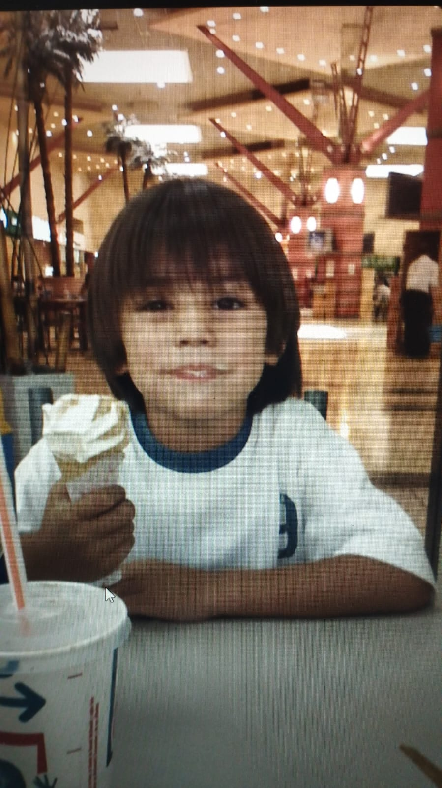

PRESENTACION
mi nombre es luciano Rossi Tengo 23 años y soy estudiante de Analista de Sistemas. Actualmente trabajo y me capacitan en un grupo de clinicas llamado clinifam , en el sector de sistema.
HOBBIES
me gusta mucho ver peliculas y series,principalmente de ciencia ficcion y terror. ,me gustan los deportes de chico hice (futbol,tenis,natacion) , hoy en dia sigo jugando al futbol y hago calistenia.
ESTUDIOS
CONTACTO
